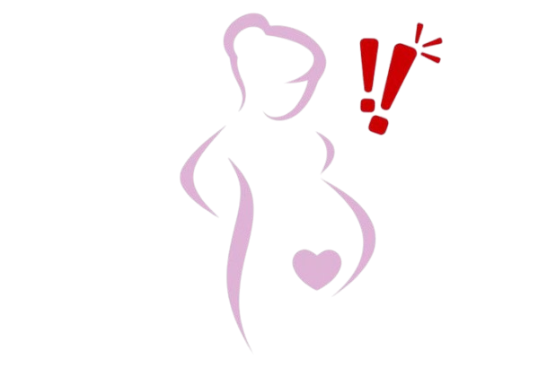

Tanda Bahaya Kehamilan

Trimester I
- Pendarahan
- Nyeri perut hebat
- Mual dan muntah yang tidak berhenti
Trimester II
- Pendarahan
- Kaki bengkak hebat atau tekanan darah tinggi
- Nyeri kepala parah
Trimester III
- Pendarahan hebat
- Kontraksi dini sebelum waktunya
- Gerakan janin berkurang